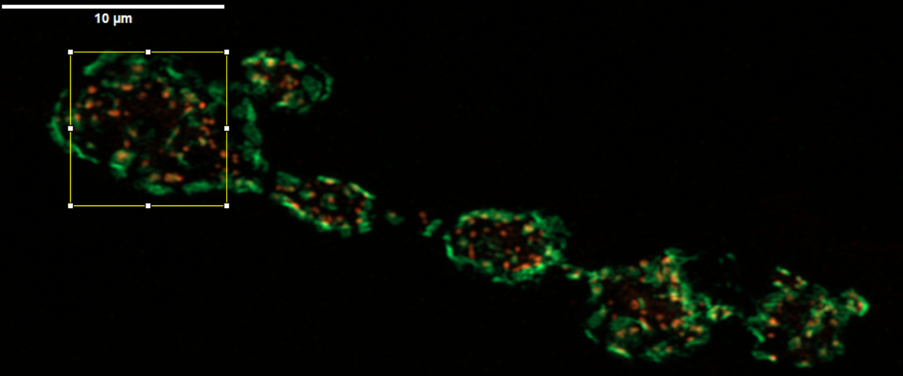

About Our Lab
The Roche Lab is a neuroscience research lab at Amherst College led by Prof. John Roche. We are interested in understanding how the nervous system works at the molecular level and how neurons communicate with one another.
Our research focuses on the proteins and cellular processes that help build, maintain, and support synapses. By studying these processes, we hope to better understand how the nervous system functions and what happens when these systems are disrupted in disease.
We combine a variety of experimental approaches to explore these questions and create opportunities for students to participate directly in scientific research.
Research Focus
How are synaptic proteins organized to build functional neural circuits, and how do changes in these proteins lead to progressive neurological disorders?

High-resolution imaging of the Drosophila NMJ.
To answer these questions, The Roche Lab uses the Drosophila neuromuscular junction to dissect protein function in vivo.
We use an integrated approach combining forward and reverse genetics, immunohistochemistry, electrophysiology, and live and fixed tissue imaging.
Research Goals
Protein Characterization
Identify and characterize synaptic protein involved in synapse development, function and plasticity.
Interaction Networks
Map protein-protein interactions at the synapse to understand molecular mechanisms underlying synaptic function.
Disease Mechanism
Investigate how disruptions in synaptic proteins affect synapse function, with the goal of linking these changes to neurodegenerative disease.